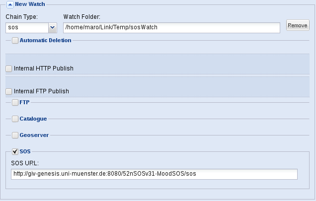
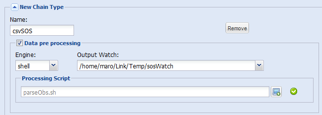
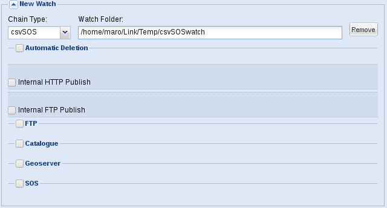

This tutorial shows how to ingest sensor data stored in a csv file into the SOS server via the ARMS.
Prerequisite: the sensor has to be already registered in the SOS.
Constraints: this tutorial is for the linux platform (shell script)
Resources:
The csv that will be used for this tutorial has the following format
[Water Velocity],[Time Instant],[Latitude],[Longitude]
and can be found here
An example of the input SOS file can be found here. The files to be ingested will be generated via the pre-processing script.
This script is provided as an example and have to be adapted to the specific files format applicable to your use case. In this tutorial the script parses the csv file and creates a new SOS compliant file for each line. This file is stored in a directory "watched" by the ARMS and automatically uploaded in the SOS server.
Open the ARMS GUI.
Create a watch for the single SOS ingestion following these steps:

In the example above the new watch will allow publishing all the SOS compliant file that will be stored in the /home/maro/Link/Temp/sosWatch directory.
Now we have to create a new chain type to allow the pre-processing of the csv data. The output of the pre-processing will be a set of SOS compliant data that will be stored in the /home/maro/Link/Temp/sosWatch directory and automatically ingested.
To create a new Chain Type follow these steps:

Now we have to add a new Watch for the ingestion of the csvSOS files. This new watch will not perform directly the ingestion. It will perform the pre-processing and will store the results in the SOS watch directory. The SOS watch will then perform the publication of the data.
To create the new Watch follow these steps:

The ARMS is now ready to ingest csv SOS data into the SOS server.
To test the ingestion copy the csv sensor file in the watched directory (/home/maro/Link/Temp/csvSOSwatch in the example).
 The directory /home/maro/Link/Temp/csvSOSwatch has been used as an example. Use your own path to define watches.
The directory /home/maro/Link/Temp/csvSOSwatch has been used as an example. Use your own path to define watches.